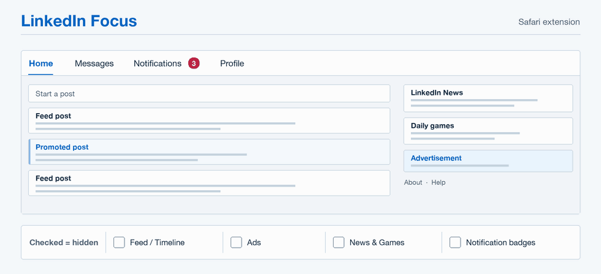

How to hide the LinkedIn feed in Safari
LinkedIn Focus is a free, open-source Safari extension for macOS. Hide the home feed, promoted posts and sidebar ads, news and games, or notification badges. Allow or block posts from selected people and companies. Messaging and profiles stay available.
Show animated demo

Try in Safari without Xcode
- Download the Safari ZIP.
- In Safari → Settings → Advanced, enable Show features for web developers.
- In the Developer tab, click Add Temporary Extension, confirm the unsigned extension prompt if shown, and select the ZIP.
- Open LinkedIn, click LinkedIn Focus in the toolbar, and allow it to run on the site.
Safari removes temporary extensions after 24 hours or when you quit. Follow the Xcode quickstart for a local build that persists across restarts.
Hide the home feed
- On LinkedIn, click the LinkedIn Focus toolbar icon in Safari.
- Turn on Feed / Timeline to hide the feed without reloading the page.
Allow or block posts from specific accounts
Open a profile or company page and click Allow this account or Block this account in the Safari popup. Both buttons also appear beside authors in the full feed. You can also paste a LinkedIn profile or company URL under Allowed accounts or Blocked accounts and click Add.
Allowed posts stay visible while Feed / Timeline is on. Blocking hides posts in both feed modes and takes precedence if an account is on both lists. The filters apply to posts LinkedIn loads into your home feed.
Safari stores both lists locally and applies changes without reloading LinkedIn. Click Remove next to an entry to take it off either list.
Can I block LinkedIn ads and keep the feed?
Yes. Turn on Ads and turn off Feed / Timeline in the popup. Promoted posts and sidebar ads are hidden while the feed stays visible.